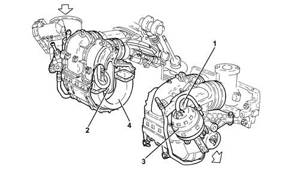
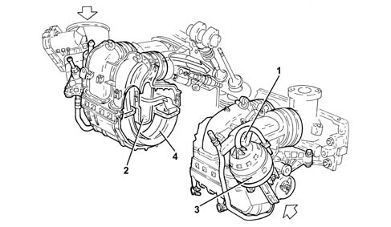
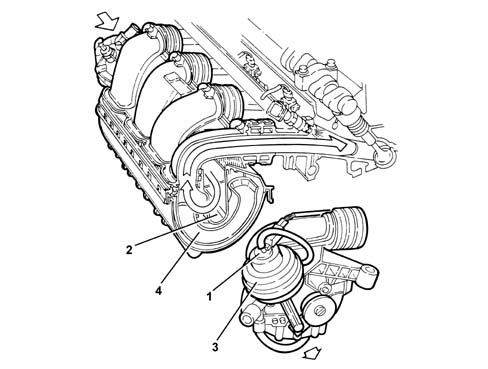
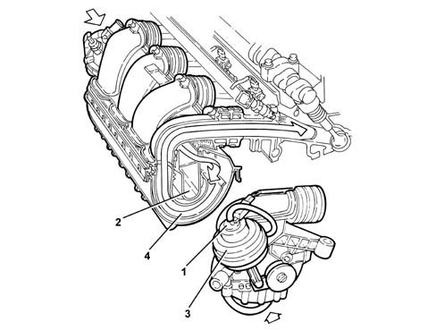
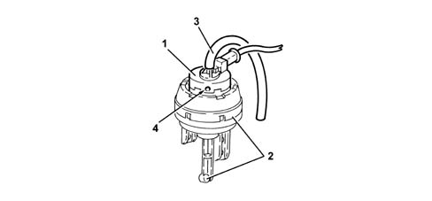

1072D MODULAR INLET MANIFOLD (V.I.S.)
- Path
- Descriptions > 10 ENGINE UNIT > 1072 INLET AND EXHAUST MANIFOLDS > 1072D MODULAR INLET MANIFOLD (V.I.S.)
- Kind
- system description
- Applies to
- engines: 1.8 T.SPARK, 2.0 JTS; all production periods
- Interactive page
- https://sloeber94.github.io/elrnDB-aGt/en/#/125000295
Applies to: engines: 2.0 JTS; all production periods
MODULAR INTAKE MANIFOLD
It is an intake manifold of modular length controlled by the injection control unit that allows volumetric efficiency to be increased and thereby:
- optimize torque delivery at low/medium speeds
- increase power at high speeds.
The manifold consists of:
- two nylon halves
- an internal rocker duct
- a vacuum accumulator formed inside the manifold
- a modular intake device control actuator with built-in three-way control solenoid.
Operation
The injection control unit controls a three-way solenoid (1) that puts the vacuum accumulator (2) in communication with the pneumatic actuator (3), which allows the rocker duct (4) to move via two linkages.
The rotation of the rocker duct allows the ducts to assume the configurations of the short power ducts at speeds of up to 2800 rpm and above 5200 rpm.

long torque ducts at speeds between 2800 and 5200 rpm

SWITCHING DEVICE CONTROL ACTUATOR ENABLEMENT SOLENOID VALVE
This is a three-way solenoid built into the pneumatic actuator controlling the modular intake manifold and it is controlled by the injection control unit.
Its function is to allow the vacuum present in the vacuum reservoir (inside the modular intake chamber) to act on the pneumatic actuator controlling the rocker duct.
1 - Switching device control actuator enablement solenoid valve
2 - Modular intake control actuator
3 - Vacuum intake pipe
4 - Atmospheric pressure air intake
Applies to: engines: 1.8 T.SPARK; all production periods
Modular intake manifold
It is an intake manifold of modular length controlled by the injection control unit that allows volumetric efficiency to be increased and thereby:
- optimize torque delivery at low/medium speeds
- increase power at high speeds
The manifold consists of:
- two nylon halves
- an internal rocker duct
- a vacuum accumulator formed inside the manifold
a modular intake device control actuator with built-in three-way control solenoid.
Operation
The injection control unit controls a three-way solenoid (1) that puts the vacuum accumulator (2) in communication with the pneumatic actuator (3), which allows the rocker duct (4) to move via two linkages.
When the swinging duct rotates, the ducts can take up the following configurations:
short power ducts at speeds above 5500 rpm.

- long torque ducts at speeds between 2800 and 5500 rpm

Switching device control actuator enablement solenoid valve
This is a three-way solenoid built into the pneumatic actuator controlling the variable geometry chamber and it is controlled by the injection control unit.
Its function is to allow the vacuum present in the vacuum reservoir (inside the intake chamber) to act on the pneumatic actuator controlling the rocker duct.

1, Switching device control actuator enablement solenoid valve
2, Modular intake control actuator
3, Vacuum intake pipe
4, Atmospheric pressure air intake